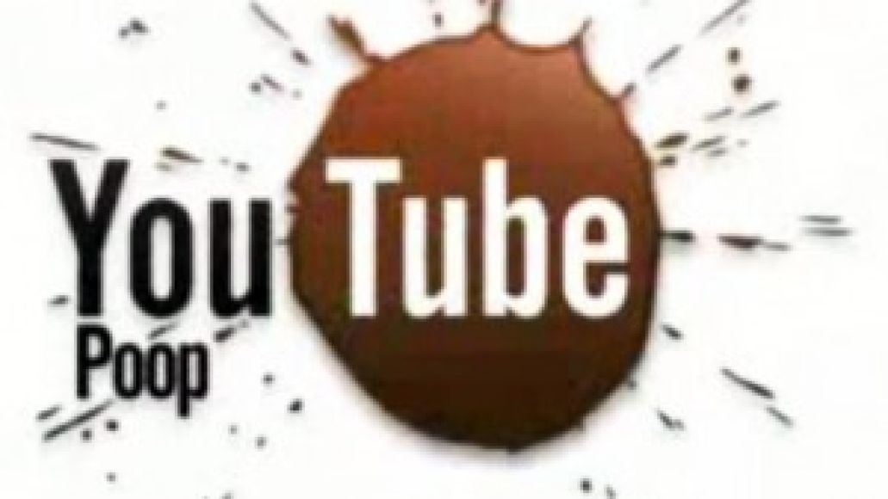

What is a YouTube Poop?

YouTube Poop, often abbreviated as YTP, is a genre of video mashups created by remixing or editing existing media—including (but not exclusive to) clips from popular cartoons, TV shows and commercials. According to Wikipedia1, the source material often carries cultural significance which is fragmented and appropriated into a new media for "humorous, satirical, obscene, profane, as well as annoying, confusing, or dramatic purposes". Meanwhile, meme database Know Your Meme defines the goal of YouTube Poop to create "purposely annoying videos that delight those who make them and irritate those tricked into watching".2
The video regarded as the first YouTube Poop was uploaded on the website SheezyArt, as opposed to YouTube, circa 2004: The Adventures of Super Mario Bros. 3 REMIXED!!!, or what is now known as "I'D SAY HE'S HOT ON OUR TAIL", by YouTube user SuperYoshi. It was created with Windows Movie Maker and uses clips from the 1990 animated television series The Adventures of Super Mario Bros. 3, which has been regarded as kitsch by fans of the Mario franchise, as a primary source. It exhibits stylistic and aesthetical staples of YouTube Poop, including repetition of clips for comedic effect (the video name is a particularly campy pun spoken by Luigi that is repeated throughout the video), and critically disregarded media as a video source. In late 2006, cutscenes from games released on the Philips CD-i platform (most notably Hotel Mario, Link: The Faces of Evil, and Zelda: The Wand of Gamelon) as well as the animated series Adventures of Sonic the Hedgehog and the 1995 DOS game I.M. Meen were incredibly common sources in YTPs, as they had been ironically acclaimed for deviating from the quality expected of their respective franchises.
In the book YouTube: Online Video and Participatory Culture 3 Burgess and Green (2013) describe the YTP phenomenon in this way:
Another good illustration of this fascination with the technological capabilities of digital video editing is the category of videos referred to by their producers as `YouTube Poop.’20 Emerging as a genre of their own, these often-frenetic videos piece together found television footage into irreverent, often nonsensical works. They show a particular fascination with Saturday morning cartoons from the 1990s (particularly `low' American cartoons such as The Super Mario Bros. Super Show!) and television commercials, though there are also `poops' made for anime series21 and videos from YouTube itself.22 The edits are often abrupt and jarring, and the audio is manipulated through quick cuts, changing speeds, and the introduction of alternative soundtracks. The result frequently foregoes narrative and resembles something most akin to parody or video art. Throughout the user-created content in our survey, regardless of the techniques used, the sample points clearly to a logic of cultural value centered for the most part around novelty and humor.
Source 1 ↗Source 2 ↗
Source 3 ↗